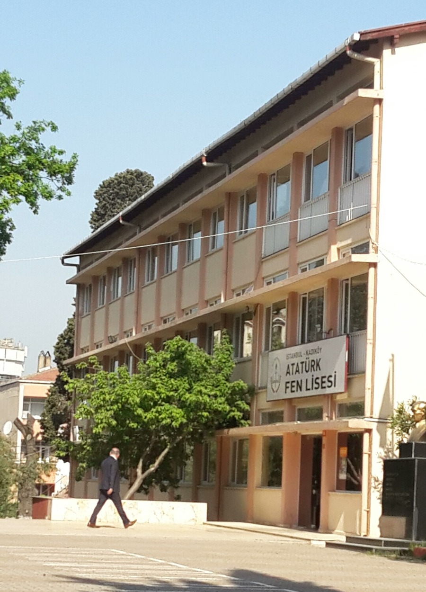
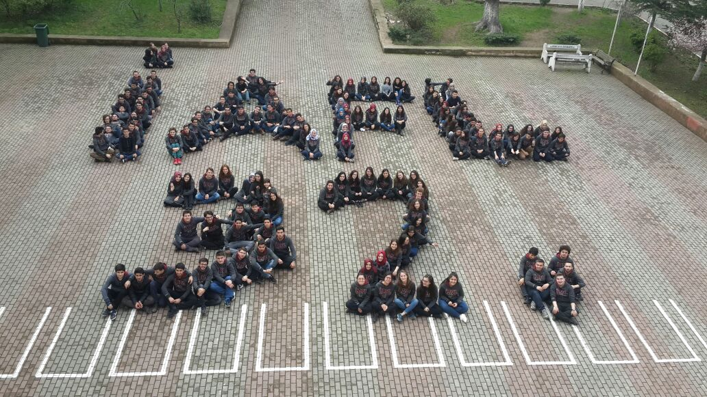

Achievements

Success of getting into a university
Istanbul Ataturk High School of Science, which gave its first graduates in 1985 with great success,
especially in the university entrance exam, since then and has always been one of Turkey's leading high schools.
Each year, our graduates achieve the highest scores in the university entrance examination and enroll in the programs
such as engineering, medicine, and basic sciences of the best universities in Turkey.
Besides these fields, some graduates choose law, management, business, or such in recent years.
Their successful career becomes an inspiration to young souls.
In recent years, 60% of our graduates enroll in medicine while 30% of them choosing engineering programs.
Also, 70% of our graduates enroll in Turkey's best five universities in their field. Although students generally go with studying in Turkey,
some go abroad for licentiate degree choosing University of California, University of Colorado, Nottingham University and such.
Top universities that are mostly enrolled by our students is listed below:
- Engineering
-
- Istanbul Technical University
- Bogazici University
- Middle East Technical University
- Medicine
-
- Istanbul University
- Hacettepe University
- Management, Business
-
According to Aflim, today, we have many senior executive graduates who have achieved numerous successes in foreign and Turkish companies incorporate business circles in our country.
We are proud of the achievements of general managers and deputy general managers in companies such as Microsoft, Hitachi Data Systems, Enerjisa, Zer A.C, Boyner,
directors at Coca-Cola, Turkcell, Akbank, Merck Sharp & Dohme Pharmacy, Siemens, Migros, regional and department heads in numerous companies.
Our graduates do not fail to represent us abroad in the business world. Amazon, Twitter, Google, Pearl Automation, Anderson Economic Group,
Pactera, Berkeley Research Group, Jaguar (UK), Mercedes Benz (Germany), Affinitas are examples of the companies where our graduates are located.
Our well-known alumni is listed below retrieved from wikipedia:
- Science
-
- Prof. Dr. Osman Teoman Turgut (1985 graduate) Bogazici University, Theoretical Physics
- Prof. Dr. Ahmet Erhan Aksoylu (1985 graduate) Bogazici University, Chemistry Engineering
- Assoc. Dr. Selçuk Demir (1985 graduate) Istanbul Bilgi University, Pure Mathematics
- Prof. Dr. Kazım İlhan İkeda (1985 graduate) Yeditepe University, Pure Mathematics
- Assoc. Dr. Ersan Üstündağ (1985 graduate) Glenn Murphy Professor of Engineering, Iowa Sate University, Material Science and Engineering
- Bayındır Kuran (1985 graduate) ROKETSAN, Space Engineering
- Prof . Dr. Kamuran Saygılı (1986 graduate) Yeditepe University, Mathematical Physics
- Assoc. Dr. Giray Ökten (1986 graduate) Florida State University, Applied Mathematics
- Assoc. Dr. Can Keşmir (1986 graduate) Universiteit Utrecht, Theoretical biology and Bioinformatics
- Prof. Dr. Gökhan Mutlu (1986 graduate) The University of Chicago, Pulmonary and Critical Care Medicine
- Asst. Assoc. Dr. Hasan Bahçekapılı (1986 graduate) Yeditepe University, Psychology
- Prof. Dr. Rasim Somer Diler (1987 graduate) University of Pittsburgh, Pediatric Psychology
- Prof. Dr. Sema Salur (1988 graduate) University of Rochesters, Mathematics
- Asst. Assoc. Dr. Kağan Gökbayrak (1990 graduate), Bilkent University Industrial Engineering
- Assoc. Dr. Özlem Beyarslan (1992 graduate), Boğaziçi University Department of Mathematics, Model Theory
- Arkadaş Özakın (1992 graduate) Georgia Institute of Technology, Quantum Computation and Informatics
- Assoc. Dr. Alpaslan Parlakçı (1992 graduate), Istanbul Bilgi University, Department of Computer Science, Control theory
- Asst. Assoc. Dr. Alper Özpınar (1992 graduate), Istanbul Commerce University, Mechatronics Engineering, Artificial Intelligence and Energy
- Assoc. Dr. Zekeriya Küçükdurmaz (1994 graduate), Yeditepe University Faculty of Medicine
- Asst. Assoc. Dr. Nuh Gedik (1995 graduate), M.I.T, Applied physics
- Assoc. Dr. Barış Coşkunüzer (1995 graduate), Koç University, Pure mathematics
- Asst. Assoc. Dr. Ahmet Yıldız (1996 graduate) Univ. California, Berkeley, Biophysics
- Prof. Huseyin Isildak (1996 graduate) Penn State University, Director of Otology and Neurotology & Cochlear Implant Programs
- Assoc. Dr. Gokhan Bora Esmer (1996 graduate) Marmara University, Department of Electrical and Electronics
- Asst. Assoc. Dr. Mehmet Şen (1996 graduate) Houston Üniversitesi, Department of Biology and Biochemistry
- Asst. Assoc. Dr. Veli K. Topkara (1997 graduate) Columbia Üniversitesi, Assistant Professor of Cardiology
- Asst. Assoc. Serdar Yüksel (1997 graduate) Queen's University, Applied Mathematis
- Yildiray Yildiz (1998 graduate) NASA -Associate Scientist (NASA Ames Research)
- Alkan Soysal (1998 graduate), Bahçeşehir University. Electrical and Electronics Department, Assist. Prof.
- Aslihan Demirkaya (1999 graduate) Hartford University Mathematics, Assist. Prof.
- Asst. Assoc. Dr. Nuh Aygün Dalkıran (2000 graduate), Bilkent University, Department of Economics
- Nuri Bora Keskin (2001 graduate), University of Chicago Business Department, Assist. Prof.
- Literature and Arts
-
- Sükun Ünal Işıtan (1985 graduate) Ankara State Theater, Artist
- Serdar Öztop (1986 graduate) Musician. A member of Bulutsuzluk Ozlemi, Electric guitarist
- Gürkan Haydar Kılıçarslan (1986 graduate) Thinker and writer
- Erdem Taylan (1986 graduate) Pixar and San Francisco Academy of Art. Computer aided graphic design
- Esra Türkekul (1986 graduate), writer
- Özge Samancı (1991 graduate) University of California at Berkeley, Applied art
- Business and Media
-
- Umut Aydın (1985 graduate) Founder and manager of ORTANA Company
- Murat Kosova (1986 graduate) NTV sports presenter
- Mehmet Sadullah Bostan (1985 graduate) General Manager of Tailwind Airlines
Science Olimpics
Each year, successful students of our school return with medals in branches like Physics, Chemistry, Biology, Mathematics, and Computer
from the National Science Olympics organized by TUBITAK. In the last five years alone, Ataturk High School of Science students won 20 gold,
7 silver, and 18 bronze medals at the Olympics. Students of Ataturk High School of Science start their Olympic adventures in the first year.
They are being present in competitions even in the first year and win awards.
My Journey
This is me Zeynep Gurler!

This work of mine symbolizes my farewell to Istanbul Ataturk High School of Science. Crow is the symbol of our school and bee is the symbol of
Istanbul Technical University. I, as a bee, walk away from the crow's beak when I graduated. The little lights in the crow's eye symbolizes the young souls
that are currently growing and learning in the crow (Maybe they are captured in there and crying for help, we can't be really sure).
These are the photos that I used for my Gimp project. These photos are taken from pixabay,
a website that provides free pictures.

2017 Graduation Ceremony of Istanbul Ataturk High School of Science. I was in the crowd, too.

We are the 32nd year graduates of our school. This the picture of us celebrating our graduation at the senior year.